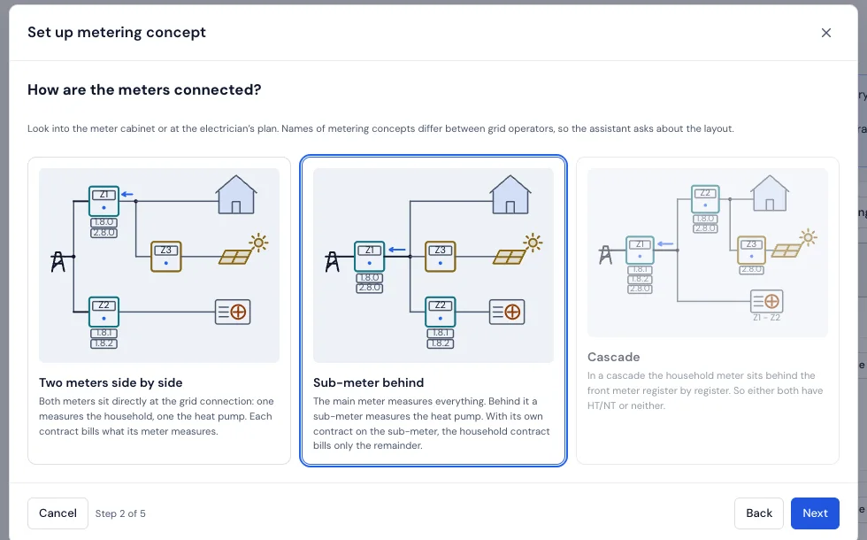
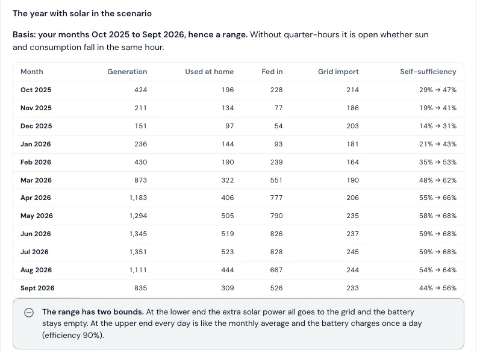

Home with heat pump, PV, battery and electric car
What does the sun bring you, and what does the heat pump cost? Energietracker recalculates what Home Assistant, evcc and your battery do. It controls nothing.
- Every contract pays only its share. The metering concept assistant knows sub-meters and cascades, also with heat pump and peak/off-peak.
- Quarter hours instead of monthly totals, from Home Assistant or from your grid operator’s files. The Flexibility page checks whether shifting paid off.
- PV and heat pump in figures: self-consumption, self-sufficiency, battery with losses, payback and the seasonal performance factor.
- What if? A larger system, a battery, more self-consumption: the workshop works it out from your measured year.
- The electric car: charging sessions from evcc and a charging record for the company car.
Not there yet: the weather-based forecast for heat pump, PV and battery comes with v3.13, planned for 17 Nov 2026. Until then the workshop uses the last measured year, as a range without a full year of quarter hours.
Electricity in the sample householdUse cases in the handbookAssessing flexibility



